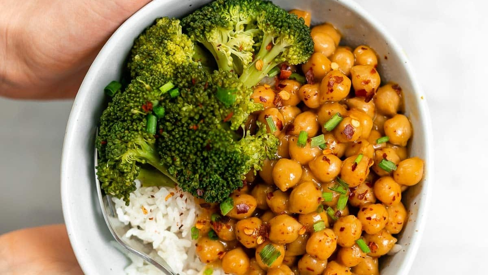
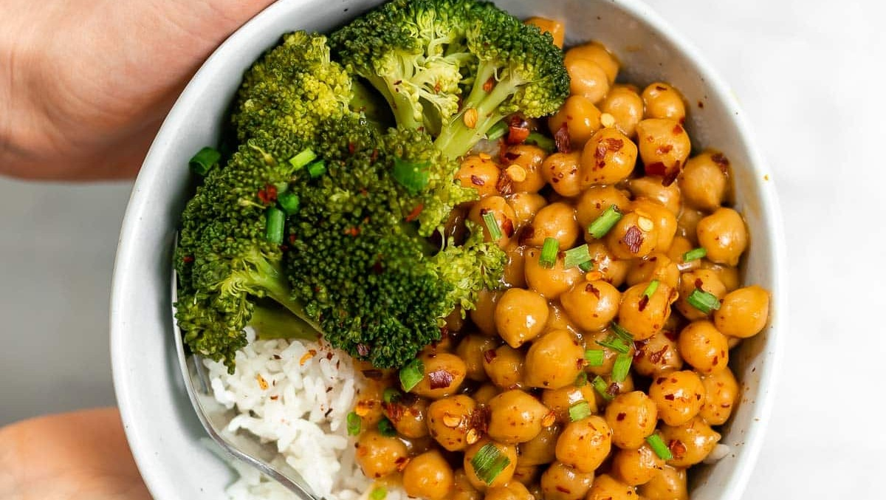

Todo vegano
.png) 

.png)
Beneficios de la comida sin carnes
Las dietas veganas son adecuadas nutricionalmente, con beneficios en la prevención de enfermedades, de acuerdo con la Asociación Americana de Dietética (ADA), en su documento titulado “Postura de la Asociación Americana de Dietética: dietas vegetarianas”
En esta posición, la ADA incluso sugiere que esta dieta es saludable durante el embarazo, la lactancia, la infancia, la niñez y la adolescencia, así como para deportistas. Entre las ventajas de seguir una dieta sin carne se encuentran:
- Ayudar a bajar de peso y controlarlo.
- Con más consumo de fibra, se purifica el cuerpo de manera natural.
- Previene el cáncer de mama, colon, estómago, próstata y pulmón.
- Como no se consumen grasas animales, ni colesterol, se disminuye la probabilidad de desarrollar enfermedades cardiovasculares y cerebrales.
- Los cereales, vegetales y frutas permiten un mejor control de la diabetes.
- Al prescindir de la carne, más cara que la soya, por ejemplo, ese presupuesto se puede invertir en más alimentos naturales y así, convertirse en una dieta económica.
Recetas
Fideos de arroz con salteado de tofu y pimiento
- Fideos de arroz
- Tofu firme
- Pimiento rojo
- Jengibre fresco trocito
- Salsa de soja
- Curry molido media cucharadita
- Ajo granulado cuarto de cucharadita
- Cúrcuma molida una cucharadita
- Lima
- Pimienta negra molida
- Sal
- Aceite de oliva virgen extra
- Perejil fresco o cilantro
Ingredientes:
- Desechar el líquido del tofu y escurrir bien
- Envolver en varias capas de papel de cocina y dejar como mínimo 15 minutos con un peso encima
- Cortar en cubos del tamaño de un bocado
- Calentar un poco de aceite en una sartén y dorar el tofu por todos lados. Retirar
- Cocer los fideos de arroz en agua hirviendo con un poco de sal durante unos tres minutos
- Escurrir y enjuagar con agua fría, soltándolos un poco con un tenedor
- Reservar. Rallar o picar fino el jengibre
- Cortar el pimiento en tiras finas
- Saltear en la misma sartén a fuego alto ambos ingredientes durante dos minutos
- Salpimentar, agregar la salsa de soja y las especias
- Rehogar 5 minutos. Devolver el tofu, dar unas vueltas e incorporar los fideos
- Mezclar todo bien hasta que se integren
- Servir con perejil picado
Pasos a seguír:
Tortilla vegana de calabacín

- 60g harina de garbanzos
- 1 calabazin grande
- 1/4 cucharadita de sal
- 1/4 cucharadita de bicarbonato sódico
- 1 cucharadita de cúrcuma molida
- 1/2 cucharadita de comino molido
- 1/2 cucharadita de ajo granulado
- 1 cucharadita de hierbas provenzales al gusto
- 1 cucharada colmada de levadura en copos
- Pimienta negra molida
- 1/2 cucharadita de zumo de limón
- Pimienta negra
- 120 ml de agua
- Aceite de oliva virgen
Ingredientes:
- Disponer en un cuenco mediano la harina de garbanzos, la sal, el bicarbonato, las especias, la levadura en copos y un golpe de pimienta
- Mezclar con unas varillas y añadir el agua y el zumo de limón
- Mezclar bien hasta tener una masa líquida ligeramente espesa, sin grumos
- Lavar y secar el calabacín y rallar sobre la masa con un rallado grueso
- Mezclar todo muy bien hasta tener una masa jugosa
- Escurrir y enjuagar con agua fría, soltándolos un poco con un tenedor
- Engrasar una buena sartén o fuente antiadherente que se pueda introducir en el horno
- Echar la masa y distribuirla bien, aplanando con una espátula o cucharón
- Cocinar a fuego bajo-medio y precalentar el horno a 160ºC. Subir un poco la temperatura del fuego pasados unos minutos, y comprobar que se está cuajando por abajo retirando con suavidad los bordes
- Si burbujea por el centro, bajar un poco el fuego. Pasados 10 minutos, cuando veamos que los bordes están ya bien doraditos, llevar al horno en la parte más alta que podamos
- Gratinar hasta que esté dorado por encima y volcar sobre un plato grande.